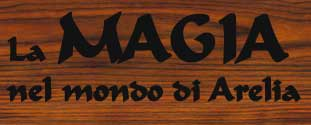
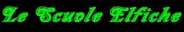

Il mondo di Arelia è un mondo in cui la magia svolge un ruolo fondamentale senza però divenire eccessiva.
Con il termine magia ci riferiamo fondamentalmente a quella scienza che ha permesso agli esseri senzienti di manipolare quella energia che esiste intorno ad ogni oggetto od essere vivente sottoponendola al proprio controllo e sfruttandola per le più varie finalità.
La magia dell'antico metodo (o la magia rituale)
Originariamente le prime forme di magie, ora definite "antico metodo", erano nettamente differenti da quelle utilizzate nella moderna Arelia. Questa prima forma di utilizzo della magia si basava fondamentalmente sull'utilizzazione dell'aura magica che circonda tutte le cose e tutti gli esseri viventi.
La legge fondamentale utilizzata dagli utenti di magia del periodo antico esponeva in modo chiaro e preciso il concetto alla base dell'utilizzazione dell'aura magica:
"La forza dell'aura magica è direttamente proporzionale alla rarità del suo elemento"
E' chiaro che da questo concetto base derivarono molti corollari il cui insieme diede vita ad una vera e propria metodologia di utilizzo delle energie magiche.
Caratteristica dell'antico metodo era la lunghezza del tempo di lancio delle magie. dovendosi sfruttare l'aura degli elementi occorreva compiere dei rituali che anche se piccoli avevano una durata mai risultata inferiore allo scorrere di un'ora. Se si considera inoltre che per potenziare l'effetto del rituale molto spesso si ricorreva al principio in base al quale qualora questo fosse stato eseguito in un momento particolare dell'anno a sua volta indice di rarità temporale (ad esempio durante un'eclissi) è facile capire come questo tipo di magia non fosse di rapido utilizzo e richiedesse una preparazione materiale e temporale costosa e lunga. Allo stesso tempo però qualsiasi conoscitore di magia (indipendentemente dal suo livello di esperienza) aveva la possibilità di preparare con denaro e tempo il lancio di magie di estrema potenza, ciò perché la forza degli incanti dipendeva dall'aura utilizzata al momento del lancio e non dalla bravura del mago. Proprio questo punto dopo la scoperta del nuovo metodo condusse al declino di questo tipo di magia... si trattava cioè di una forma di utilizzo di magia poco controllabile dalla nuova classe di maghi al potere. Comunque l'antico metodo aveva dei vantaggi notevoli, in primis le magie avevano maggiore potere e durata ( era molto più consueto ottenere una durata permanente di una magia ), inoltre non erano richiesti degli investimenti nel capitale umano dei maghi notevoli come per il nuovo metodo per il lancio di magie di estrema potenza.
L'antico metodo seppure, come vedrete, è oggi bandito ad Arelia, non è stato del tutto abbandonato. Per la costruzione di oggetti magici è l'unico metodo utilizzabile e lo sfruttamento, usuale nel nuovo metodo, di componenti materiali al lancio delle magie non è niente altro che un residuo dell'antico metodo utilizzato per potenziare il lancio di magie attraverso le mere formule magiche.
La magia del nuovo metodo (o la magia delle formule magiche)
Ormai è un dato di fatto che storicamente furono gli elfi Erlin, circa 700 anni or sono, a scoprire per primi il nuovo metodo destinato a sconvolgere l'intera idea di magia fino ad allora conosciuta.
I maghi scoprirono che utilizzando delle formule magiche pronunciate attraverso l'emissione di suoni ( componente vocale ) e/o la gesticolazione ( componente somatica ) erano in grado di richiamare l'energia che circonda ogni essenza in modo molto più rapido, anche istantaneo, e quindi utilizzabile in situazioni come il combattimento.
A questo punto ci fu una vera e propria rivoluzione della magia, i sostenitori dell'antico metodo, costoso e lento, furono presto soppiantati dagli studiosi delle nuove formule magiche che utilizzarono i loro potere per imporsi ai primi ( a volte anche fisicamente ).
Il nuovo metodo richiede però lo studio di formule complicatissime che sono in grado di scatenare le forze magiche. I teorici del nuovo metodo hanno scoperto nove tipologie di formule possibili. Si tratta di nove tipi di formule che sono assai differenti l'una dalle altre e che sono caratterizzate da una difficoltà di apprendimento crescente. Solo crescendo con l'esperienza un utente di magia è in grado di apprendere nuovi livelli di formule che ai livelli più alti richiedono un'esperienza quasi impossibile da raggiungere per un essere mortale.
Si scoprì inoltre che l'esperienza richiesta dai maghi per apprendere un nuovo tipo di formule era praticamente costante, in questo modo furono teorizzati i nove livelli di potere che oggi contraddistinguono le magie del nuovo metodo.
Inoltre i maghi scoprirono che era possibile attingere attraverso queste formule la magia da luoghi e dimensioni diverse e per finalità diverse. Seppure quindi si utilizzava formule della stessa tipologia ( quindi dello stesso livello di potere ) la costruzione delle frasi magiche era nettamente diversa a seconda della fonte e del risultato della magia. In questo modo furono create le Scuole di Magia (concetto non esistente nell'antico metodo).
In base al nuovo metodo, inoltre, la bravura e l'esperienza del mago risultò subito molto rilevante e di conseguenza necessari e costosi risultarono gli insegnamenti dei maghi più bravi alle nuove leve. Quando i maghi raggiunsero un peso sociale notevole, avendo ormai anche perso quell'alone di stregoneria insito in un metodo rituale, si organizzarono tutti ( senza distinzioni di razza, lingua, origine ecc...) in una grandissima organizzazione trasversale chiamata Circolo del Potere.
"[Riferendosi alla magia del nuovo metodo...] Questo è non solo un nuovo metodo di lancio della magia in quanto la sua elaborazione è andata definitivamente a riflettersi anche su altri aspetti della nostra vita di utenti di magia. Il nuovo metodo ha influito soprattutto sull'organizzazione dei Circoli di Magia. Adesso, finalmente, è tutto più ordinato e sistemato, esistono nove livelli di potere crescente ai quali noi maghi possiamo accedere solo dopo il dovuto addestramento ed è anche grazie a queste innovazioni che hanno visto la nascita le differenti Scuole di Magia. Diffidate da chi contesta questo! Quando studierete l'antico metodo non dimenticate che quello che state facendo non è altro che un'opera storica, non lasciatevi affascinare dal metodo rituale o dalle immagini di libertà che possono derivare dallo studio delle vite degli antichi maghi. Provare a ripetere queste esperienze di caos e confusione, al di fuori del diretto controllo delle scuole, significa, infatti, rinnegare il nostro sistema; significa essere messi al bando dalla comunità dei maghi, equivale a sconfessare il vostro giuramento al Circolo del Potere ed a rinnegare tutti gli insegnamenti che vi sono stati impartiti, ma, sopratutto, significa mettersi contro di me..." [Tratto dal discorso agli Apprendisti Accademici tenuto da Traigor Lorgarn, Saggio Maestro dell'Accademia dei Nove Saggi di Tarsis, nel 181 p.n. inflictus (by Francesco Indrizzi)]
Le Accademie di Magia riconosciute dal Circolo del Potere sono le seguenti:
Accademia
dei Nove Saggi di Tarsis (Evocation
- Air)
La
Scuola delle Illusioni dei Cirs (Illusion)
L’Istituto
di Arti Evocative di Artas (Evocation
- Earth)
La Scuola delle Fiamme
Purificatrici di Sinkros
(Evocation
- Fire)
L’Antica
Scuola di Manipolazione Magica Nordoriana
(Alteration)
Il
Circolo dei Summoner di Pergar
(Conjuration/Summoning)
Le
Tre Torri di Divinazione Silveriane (Divination)
L’Organizzazione
Suprema dei Necromanti (Necromancy)

Circoli Protettivi Erlin (Abjuration)
La Torre Incantata (Enchatment)
Scuola Elfica della Seduzione (Charm)
Accademia della Fonte Magica (Evocation - Water)
Le Scuole di Magia Minori:
Il Cristallo Magico (Enchantment)
La Torre di Gornas
(Necromancy)

Una delle prime decisioni del Circolo del Potere fu appunto quella di vietare l'utilizzo dell'antico metodo per il lancio diretto di magie e permetterne esclusivamente lo studio a livello teorico.
NOTA BENE : Per utilizzare al meglio la storia e le regole sulla magia occorre una buona conoscenza di tutto il materiale qui contenuto. Solo a seguito dello studio di tutto il materiale potrete apprezzare a pieno i singoli richiami che sono fatti tra la storia della magia e le nuove regole che ad Arelia sono utilizzate.